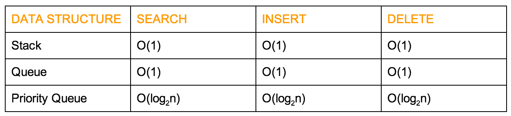

Week 12 Ex. 4: Create a small table showing the complexity of the operations of search, insert and delete for the special purpose data structures: stack, queue priority queue (heap implementation).
Output:
